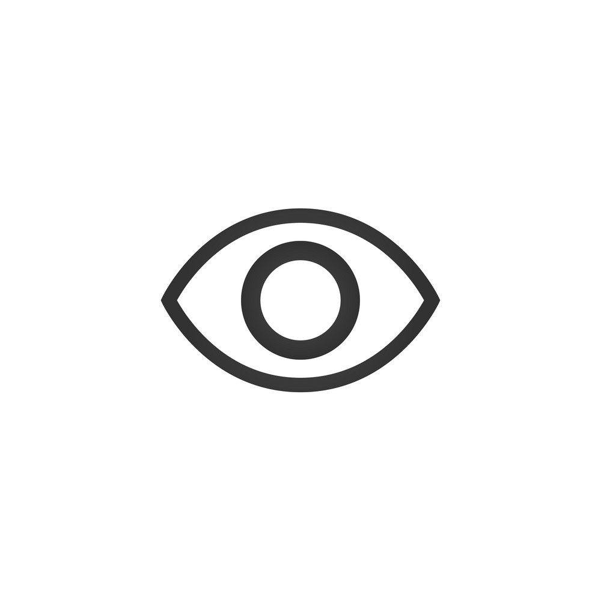
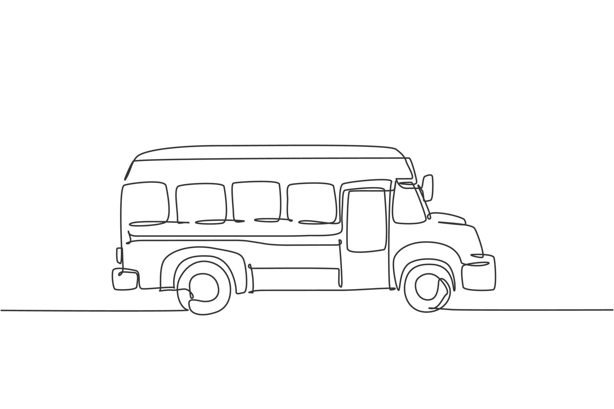

My projects

Pac-men
Animates pac-men and reverses their path whenever they hit the screen edge.
Go to the repo Demo

Eye exercise
Eyes that track your cursor position. Warning: may distract you for a while.
Go to the repo Demo

Real-time bus tracker
Simulates a bus route with all of its stops. Once the bus reaches its end destination, it resets.
Go to the repo Demo